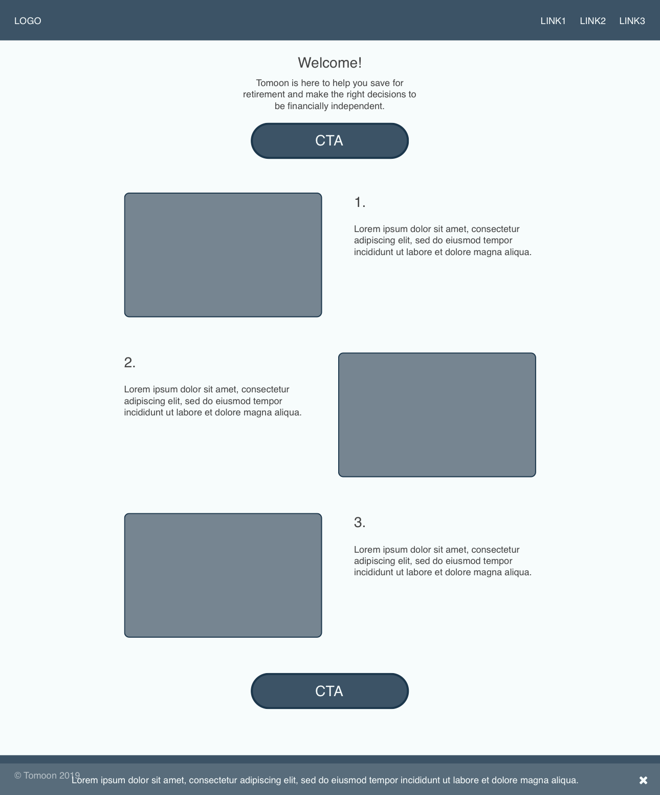
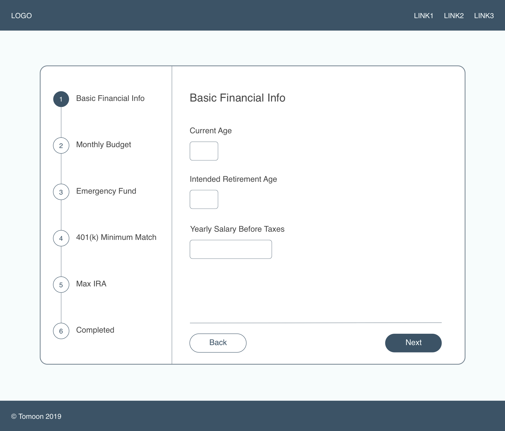
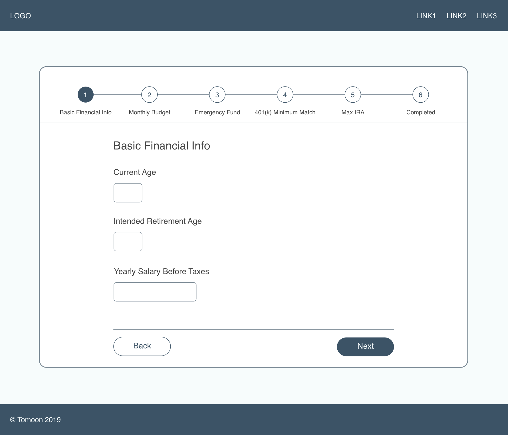
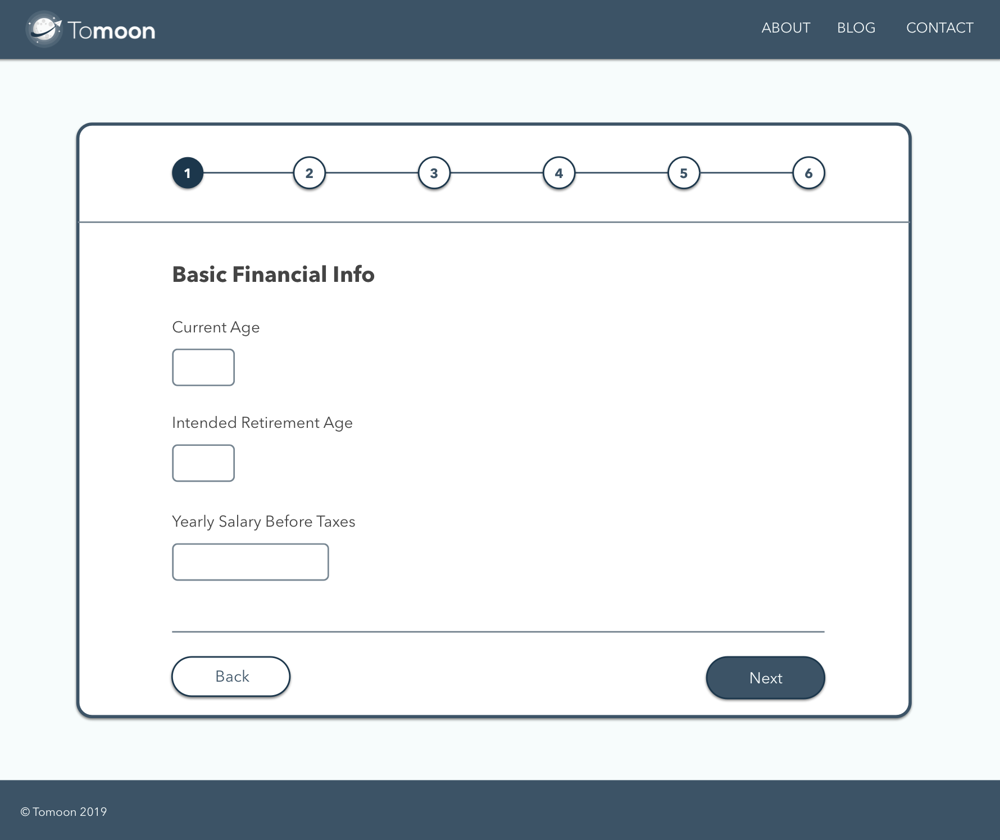
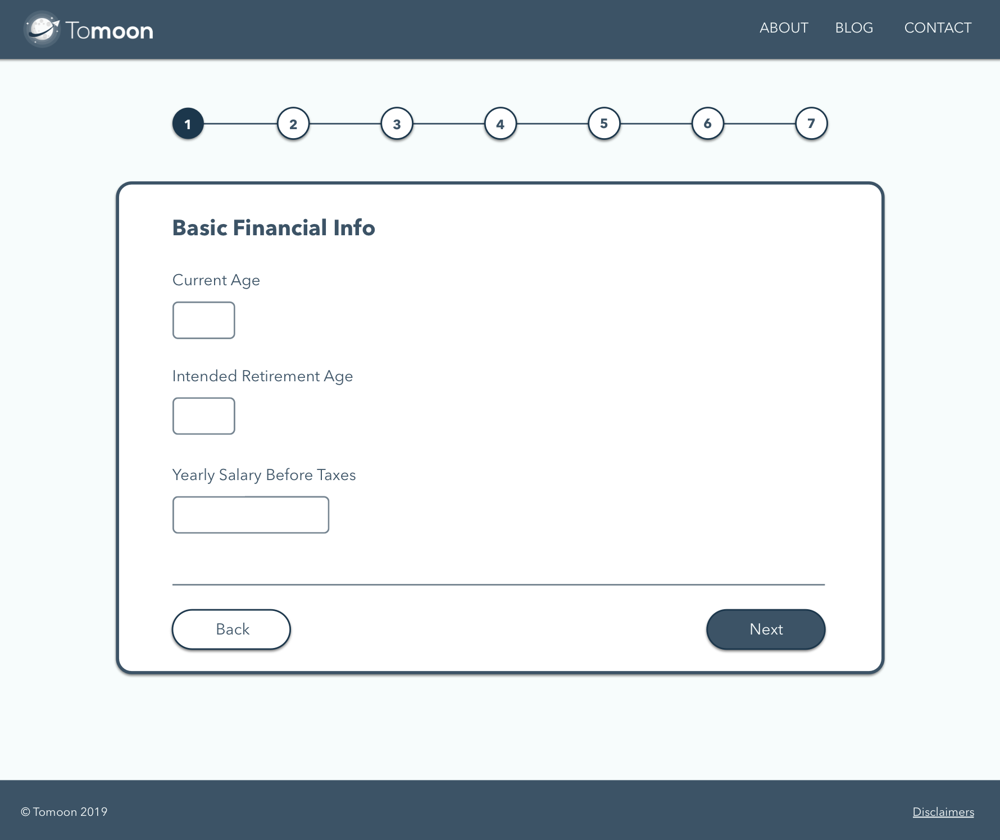

ignite
Timeline
06/17 to 06/18 (Design + Dev)
Role
UI/UX Designer
Frontend Developer
Team
1 Scrum Master
5 Developers
1 Designer
Tools
Sketch
InVision
Project Brief
Background
For my first project at Optum, I was part of a team that built a web app completely from scratch. This web app was meant to be a space where admins could submit challenges and users could submit ideas to solve those challenges. After the idea submission period was over, users can then utilize pair-wise voting to decide on the top entries for the challenge. At the end, the admin would go through the top entries and choose the final winner.
Problem Statement
This project and app idea came about because there was a need for an innovation and idea-sourcing tool.
The Goal
The team was to develop this app so that leaders in the company and leaders at third-party companies would be able to pose/host a challenge in order to gather ideas to solve a particular problem. Each challenge landing page would be customizable for the hosting company to upload their own logo, colors and banner design.
Target Audience
The target audience and the end users for this web app are Optum employees as well as third party users, such as Minnesotan school districts and employees at companies like General Electric.
User Research
I did not have direct access to the end users of the app and was not able to do any initial user testing or research as this was a confidential project prior to launch. Thus, the team and I primarily looked to the product owner for direction.
Design Solution
Through weekly meetings and calls, we determined the screens/components that were vital to the app. These include the event hub, view a single idea page, submit a single idea page and voting. For the design of these pages and due to the inability to access the end users, I often had to have meetings with the product owner and his business team in order to make sure I was designing screens that met their needs and aligned with their vision for the app.
I had a very good starting point for the design of the pages. The product owner already had a vision for the event hub that had challenges displayed as rectangles with titles and a background image. I was also given requirements for features that would go on each page, such as attachments and a comment section for each view idea page. With these notes in mind, I took to the Internet to gather inspiration on how best to layout pages with different components.
Version 1
Since meetings with the product owner weren’t multiple times a week, I often initially consulted with my team in order to gather their input on intuitiveness of pages since eventually, they would also become the end users. The very first sketches were done on paper. After the paper sketches, I took to using Sketch (after doing a fair amount of research on popular design tools) to wireframe some initial main pages in order to screen-share to stakeholders during meetings.


Iteration Example
On the left is the lofi version of the start page, as designed in Sketch. The overall structure of the page can be seen here, with filler text and boxes for where images go. Call to action button locations are shown as well.
On the right is the hifi version of the same page, after multiple discussions with the client and iterations. The structure changed and the content is more flushed out, with actual images, actual text, the real logo and real navigation links.


Layouts
As previously mentioned, the entire app is basically a step-by-step guide that steers the user towards saving the most they can in a way that makes sense for them. As such, the layout of the stepper is important as the user sees this at almost every stage of the process. This screen layout went through several iterations, as seen below.


The two images above show the two different places where the steps could be. The two images below (after deciding the stepper will be up top) show two more versions of the stepper. Both are without step names (deleted in a previous iteration).


Mobile Versions
As this is a responsive web app, there is no dedicated mobile app but rather, the webpage should be reformatted nicely when viewed on a smaller device. This poses several challenges, namely the organization and presentation of data in a way that makes sense on a smaller screen, all the while not losing details and still maintaining a legible font. Below is an example of a screen viewed on mobile that was particularly hard to design and took quite a few iterations before the final version was created.
This page's design had to give the user the ability to add categories as well as sub-categories for different parts of their budget without clogging up the screen or making it hard to understand where to click or what to enter. After multiple iterations, the final design was created and this design allows the user to easily select where they want their category or sub-category and to enter specifics about what it should be called and whether or not it should belong under a larger category (via the popup).


Web and Mobile
To close out the design section with some UI visuals, this is a side by side of the web and mobile version of one of the pages with the most content in the app. I ended up doing a lot of research on ways to display large amounts of information in a table format.